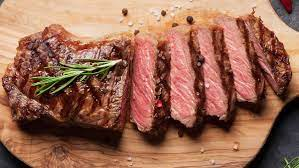

Steak

Description
Ingredients
- 300g of desired steak part
- 50g of butter
- 3 cloves of garlic
- A few branches of thyme
- Salt and Pepper
Steps
- Let the steak be at room temperature
- Season the steak well with salt and pepper based on taste
- Get an oiled skillet and heat it until smoking hot
- Add the steak in facing away from yourself. For medium rare, each side should be cooked for 2-3 minutes
- Add crushed garlic and thyme
- Serve steak on a dish and let it sit for a few minutes